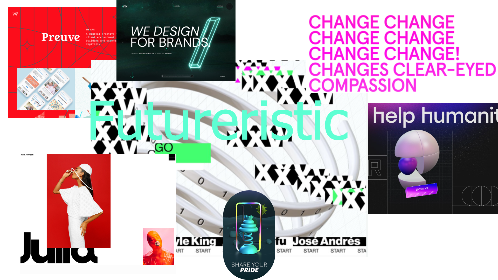
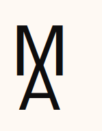
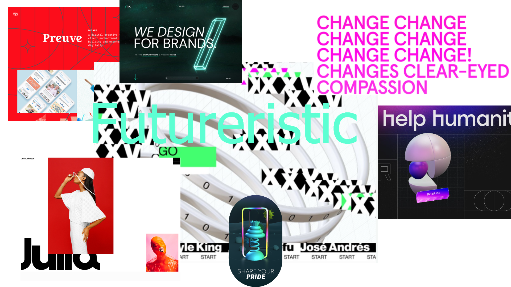
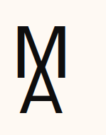

TEMA 02 GRUNDLÆGGENDE WEB
FØRSTE HJEMMESIDE - RESPONSIVE SITE
KODNING
I tema 02 web modtog vi undervisning i kodning i HTML, som er til for at skabe struktur og give indhold mening. Samt CSS, der bruges til at style et site. Vi lærte om hvordan en hjemmeside opbygges fra bunden. F.eks. lærte vi om tilgangen 'Mobil first', der betyder at starte sit design til mobilstørrelse, hvorefter man udvider det til tablets og web. Således sikrer man sig et responsive site, som betyder at ens design passer til flere skærmstørrelser. Dette kommer til udtryk på mit site der linkes til. Endeligt lærte vi brugen af forskellige Adobe programmer, herunder photoshop, hvori jeg kreerede splashbilledet samt favikonet.
STILARTER
Hertil lærte vi om de forskellige stilarter som f.eks. Modern Futuristic design, som ofte bruges i nye moderne upcomming brands indenfor den nymoderne teknologi, der blandt andet ses i moderne elbil reklamer som Tesla. Tydeligt kendetegn for stilen er de kraftfulde farvekombinationer - ofte med mørk kontrast, samt en stil, der giver et sci-fi udtryk, som blandt andet kommer til udtryk indenfor animationer.
DESIGNPROCESSER
I tema 02 lærte vi derudover om designprocesser og faser hvor blandt andet moodboard og styletiles indgår. Disse er til for at skabe en overordnet stil og ensartet udtryk for ens design. ved hjælp af styletiles fastlægges blandt andet valg omkring fonte, fontstørrelser og farver.
LINK TIL SITE 



TEMA 03 GRUNDLÆGGENDE UX
T-SHIRT WEBSHOP
I dette tema modtog vi blandt andet undervisning i brugergrænseflader og konceptudvikling. Dertil fik vi undervisning i formidling af testresultater og research.
RESEARCH
I temaet afprøvede vi brugen af forskellige testmetoder f.eks. BERT-test, som har to modsatte poler med afkrydsningsfelter imellem. En metode, der eksempelvis kan bruges til at teste en virksomheds hjemmesides konceptsammenhæng. Jeg lærte at bruge Google Forms til survey-brug til at undersøge min målgruppe. Surveyen, lavet til alle forbrugere af t-shirts, gav mig blandt andet indblik i efterspørgslen omkring bæredygtighed og holdninger til prisniveauer, kvalitet og andre faktorer indenfor brugervenlighed.
SKITSÉR & IDÉGENERERING
Vi lærte forskellige skitsemetoder som f.eks. Crazy Eight, der går ud på, at man får 8 minutter til at komme med 8 forskellige idéer - ér minut til hver idé man tegner. Denne metode er en effektiv måde at frembringe hurtige, skøre og umiddelbare idéer på. Jeg anvendte den til idégenerering på min websites forside. Et andet eksempel på sketch metode er Solution Sketch, som går ud på at samle de valgte idéer og grove skitser således, at man tegner sin færdige idé med noter i hånden eller på f.eks. Drawio. Jeg har anvendt den til websitets forside med logo, UI elementer, virksomhedens navn mm.
KONCEPT OG BRUGERVENLIGHED
I løbet af dette tema lærte vi også om UI-elementer, som bruges til at skabe større brugervenlighed på hjemmesider. I min endelige prototype gjorde jeg brug af disse og lagde samtidig vægt på nem og hurtig navigering, der blandt andet kommer til udtryk sidens forskellige ikoner, der besidder hver sin funktion, som eksempelvis at scrolle op og ned på siden, eller gå til næste side.
PITCH
I slutningen af temaet afholdte vi pitch, hvor jeg forsøgte at imødekomme min feedback ved, at optimere endnu mere på prototypens brugervenlighed. Det gjorde jeg ved, at ændre overflødige ikoner samt tilføjelse af pil-ikoner i siden frem for i bunden.
LINK TIL PROTOTYPETEMA 04 GRUNDLÆGGENDE ANIMATION
SIMPELT SPIL
I dette tema modtog vi undervising i kodesprog, JavaScript og CSS - herunder sammenspillet mellem disse. Derudover modtog vi undervising i Adobe Illustrator samt Audition, og vi lærte at kreere et animeret spil til en hjemmeside.
IDÉGENERERING OG KONCEPT
I denne fase blev vi introduceret til to diagramtyper: state machine og aktivitetsdiagram. Aktivitetsdiagrammer viser hvilken funktion de enkelte elementer besidder. Der er flere veje at gå i diagrammet, da de forskellige handlinger kan give forskellige udfald. Dette anvendte jeg til at planlægge min kodning.
SKITSERING
Vi skulle håndskitsere vores spil-idé og lave en papirprototype, for efterfølgende at bruge en idégenereringsteknik kaldet peer to peer.
DESIGNUDVIKLING
Vi modtog undervising i Adobe illustrator, hvor vi lærte teknikker til at kreere simple former med få punkter. I dette forløb blev jeg undervist i grafik og forskellige stile som f.eks. flat design. Herunder lærte jeg om brugen af storytelling-principper, som jeg brugte til at udpensle personligheden på min figurer. I mit design havde jeg fokus på perspektiv og farvekontraster for at skabe dybde og balance. Dertil lærte jeg at eksportere disse designs til svg-filer.
JAVASCRIPT OG CSS
Jeg lærte hvordan man ved hjælp af Javascript tilføjer bevægelse og interaktion ved hjælp af funktioner. Jeg lærte hvordan man tilføjer og fjerner en klasse, variabler, events og betingelser. Jeg brugte eksempelvis if/else til at bestemme betingelsen for når ens liv er opbrugt. Derudover lærte jeg at kreere lydfiler ved hjælp af programmet Audition og tilføje dem til mit spil.
LINK TIL SPILMANGLER
Jeg mistede uheldigvis mit html-dokument lige inden afleveringsfristen. Det gjorde at jeg ikke nåede implementering af regel-skærm mm. Derudover var det ikke tydeliggjort nok at 'cookien' var timeren. Efter afleveringsfristen tilføjede jeg derfor endnu en timer - placering af denne burde dog have været ændret., ydermere ville også gerne have brugt mere tid på sprite animationerne.
TEMA 05 GRUNDLÆGGENDE INDHOLD
REDESIGN AF HJEMMESIDE
I dette tema modtog vi undervising i film- og lydproducering samt klippeteknik. Vi blev introduceret til Adobe Premiere Pro, brug af kamera, formater og filtyper mm. Derudover modtog vi yderligere undervising i kodning, herunder JS mm. Vi skulle lære at dissekere en stor gruppeopgave, ved brug af tidsplaner og gruppekontrakt mm.
LYD OG KLIPPETEKNIKKER
Jeg har i Premiere Pro lært at bruge en række forskellige effekter og teknikker såsom transitions, man putter på mellem klip for, at skabe en bestemt overgang. Det kommer blandt andet til udtryk i pilotprojektet, hvor jeg har gjort brug af' 'Cross desolve' da den er med til at skabe en flydende og naturlig overgang. En anden transitions jeg også har benyttet, er Audio transition med effekten desolve 'constant power' for at op- eller nedtone lydklippene, der, tilsammen med lydjusteringen, skaber en endnu mere ren og flydende overgang. Senere i temaet under gruppeprojektet: redesign og temadokumentation lærte jeg at rendere og vigtigheden af dette.
KODNING
I gruppeprojektet Redesign og temadokumentation modtog vi blandt andet undervising i Java Script, hvor vi lærte at lave burgermenu, der med fordel kan bruges, hvis der ønskes et clean design med overskuelig navigering. Samt kontaktformularer, der bruges til websites med behov for hurtig kontakt på siden. Jeg lærte her, at opbygge en kontaktformular i HTML, som jeg implementerede på hjemmesiden til restaurant 'Safari' under 'Om os'-siden for at effektivisere brugervenligheden, således man hurtigt og nemt kan kontakte restauranten. Derudover lærte jeg hvordan man indsætter kode fra Google Maps.
ANALYSE
Som gruppe konkluderede vi stort behov for nemmere og tydligere navigering - dette på baggrund af en række Surveys samt test af den daværende hjemmeside. Her var Bert-testen, som vi både sendte ud til forbrugerne og ejerne af restauranten, en effektiv måde at se hvorvidt svar fra målgruppen stemte overens med ejerens svar omkring restaurantens hjemmeside.
TEST REDESIGN
5-sek testen, som går ud på, at forbrugeren ser på en hjemmeside i 5 sek. hvorefter personen skal besvare en række spørgsmål til hjemmesidens udseende og indhold. Den testmetode viser hvor tydeligt en virksomheds koncept og fokus kommunikeres tydeligt via deres hjemmeside. Vi brugte testen på vores redesign af Restaurant Safaris hjemmeside, hvor vi hurtigt konkluderede forbedring indenfor dette, da et af vores ønsker, kvag researchfasen var, at skabe en mere "forklarende" forside, som stemte overens med koncept og forretning.
PILOTVIDEO SAFARI VIDEO LINK TIL SITEMANGLER
Vi brugte meget tid på at kontakte hjemmesider, og da vores kunde rykkede den planlagte aftale, skred vores tidsplan. Vi burde have gået mere i dybden med gruppekontrakten, for at undgå uenigheder, som også kostede meget tid. Derudover burde vi have redigeret billederne mørkere, for at ramme Safaris ønske om en rå og upoleret stil. Menuen burde også finjusteres, f.eks. ved at ændre opacity, eller have den rene skrift med skygge på uden boks bagved. Videoen kunne også finpudses yderligere; f.eks. ville vi gerne have fjernet yderligere baggrundsstøj. I pilotprojektet brugte vi en stang til håndholdt kameraføring, som gav store rystelser, hvilket resulterede i, at WARB-stabiliziser-effekten ikke fik den ønskede virkning.